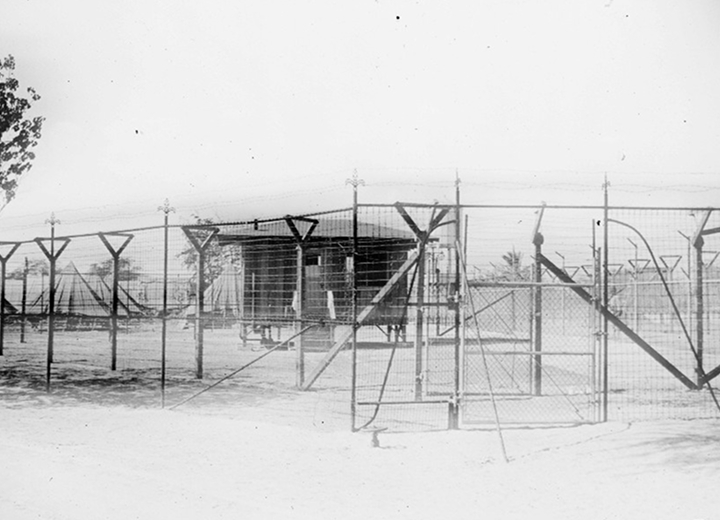
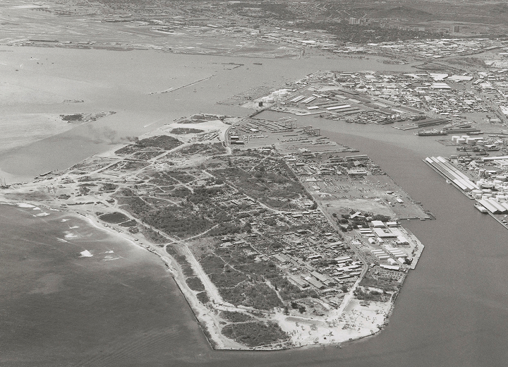

After the dredging of Honolulu Harbor's Fort Armstrong Entrance Channel, the island's name was officially changed to Sand Island. The 1941 World War II bombing of Pearl Harbor prompted the use of Sand Island as an internment camp for Japanese Americans.
Photo credit: Tokioka Heritage Resource Center at the Japanese Cultural Center of Hawaiʻi

After the war, Sand Island fell into neglect, used by the State as a dumping ground. In the years that followed, a group of Native Hawaiians began restoring the land and established a fishing village rooted in traditional Hawaiian practices. However, the State later labeled the settlement a "squatters' camp" and reclaimed the area for redevelopment, transforming it into what is now a recreational park, industrial zone, and Coast Guard base.
Photo credit: Hawaiʻi State Archives Digital Collection